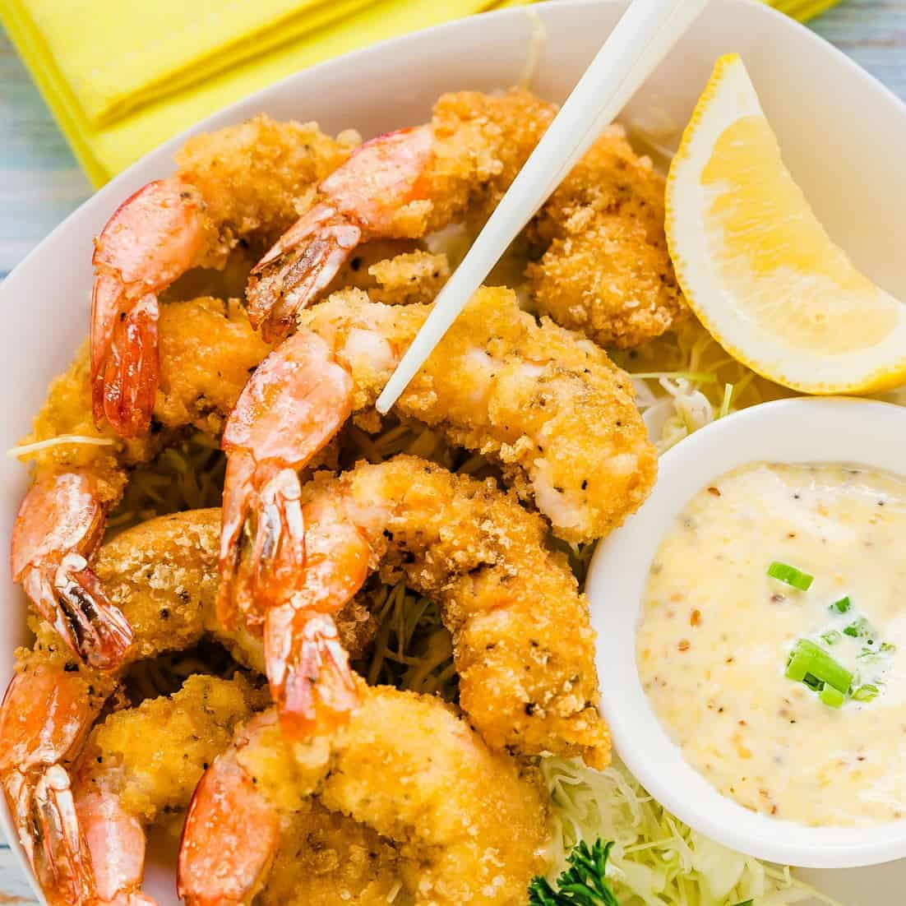

Japanese-Style Deep-Fried Shrimp

Fried Shrimp makes a great snack!
These deep-fried shrimp are coated with crispy panko crumbs to make the easiest, tastiest deep-fried shrimp ever!
Ingredients
- Medium shrimp, peeled (1lb)
- Salt (1/2 tsp)
- Garlic Powder (1/2 tsp)
- All-Purpose Flour (1 cup)
- Paprika (1 tsp)
- Large Eggs, beaten (2)
- Panko Crumbs (1 cup)
- Vegetable Oil (1 quart)
Steps
- Place shrimp in a bowl and season with salt, pepper, and garlic powder. Mix flour and paprika together in a shallow bowl.
Place eggs in a second bowl and panko in a third bowl.
- Heat oil in a deep fryer or deep skillet to 375 degrees F (190 degrees C).
- Dip each shrimp into flour mixture, then into egg, and finally into panko crumbs to coat.
- Fry a few shrimp at a time in the hot oil until golden brown, about 5 minutes. Remove with a slotted spoon and drain on paper towels before serving.